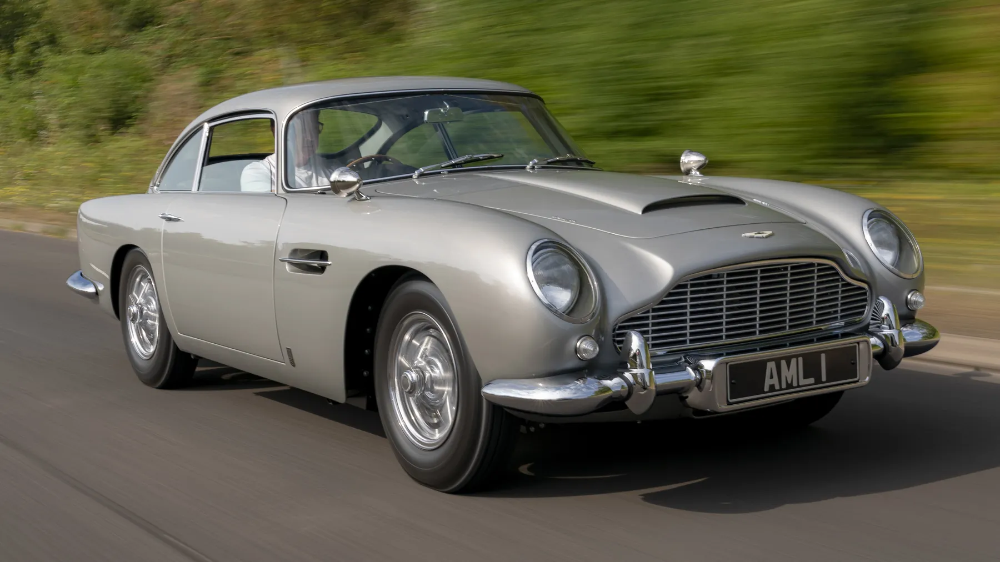
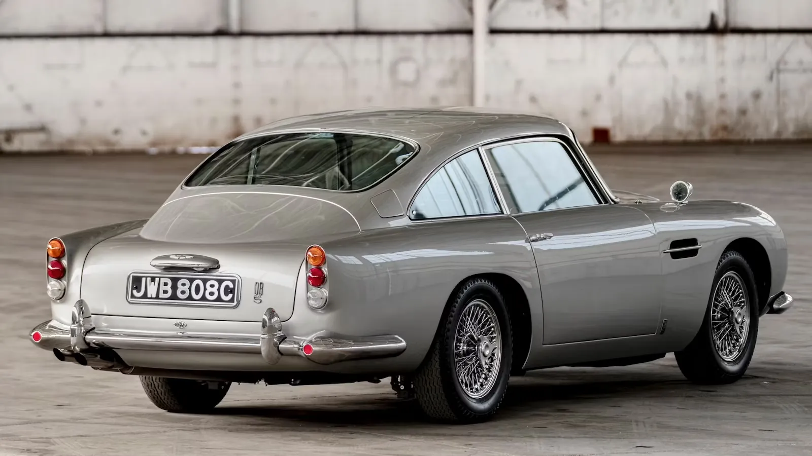
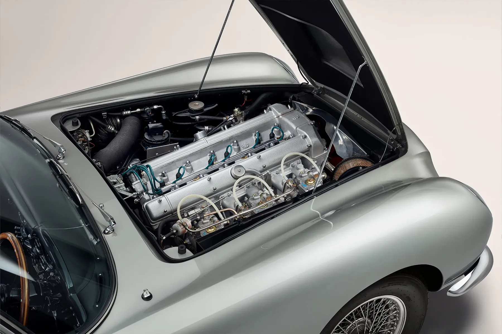
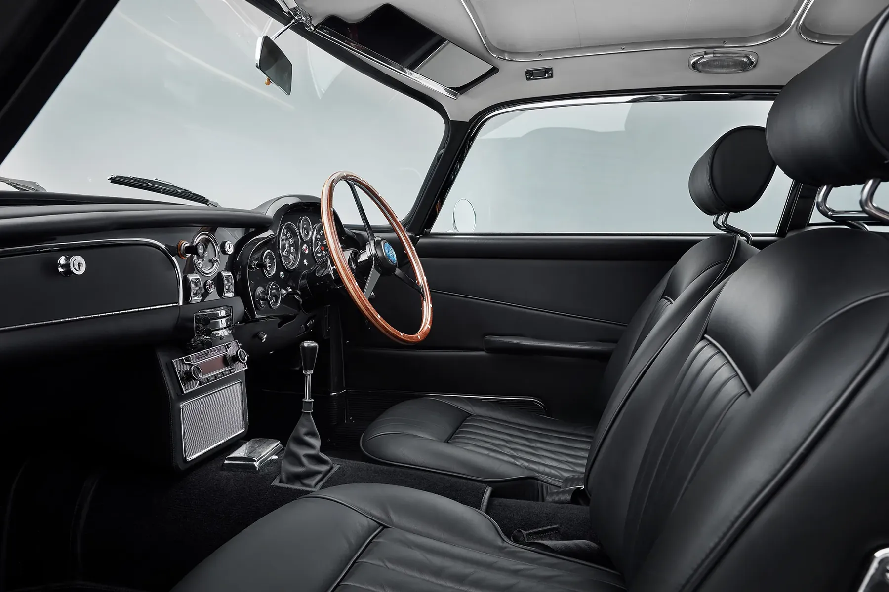
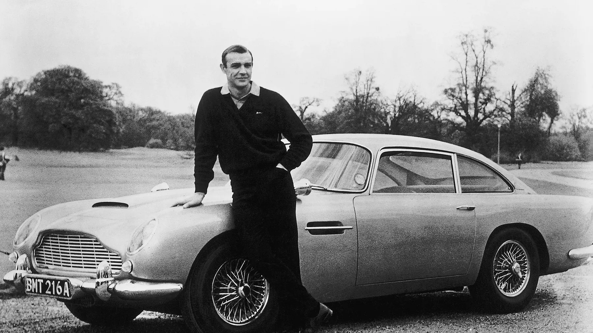
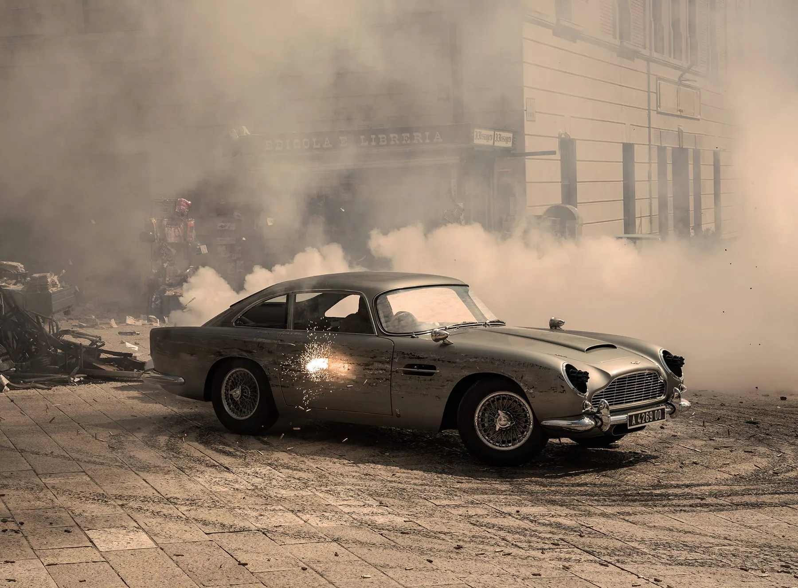
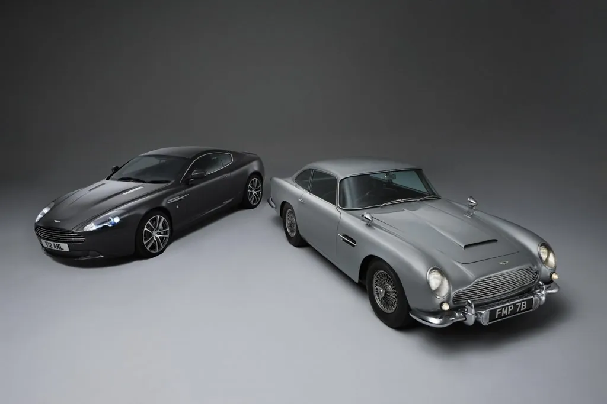

Aston Martin DB5Aston Martin DB5
El Aston Martin DB5, presentado en 1963 como sucesor del DB4, es quizá el coche más famoso que ha fabricado la marca. Concebido como un gran turismo refinado más que como un deportivo puro, combinaba la fabricación artesanal, un elegante estilo italiano y la ingeniería británica de una forma que cautivó a aficionados de todo el mundo. Fabricado en series limitadas entre 1963 y 1965, desde entonces se ha convertido en un icono del diseño de automóviles y de la cultura popular.
The Aston Martin DB5, first unveiled in 1963 as the successor to the DB4, is perhaps the most famous car ever built by the brand. Designed as a refined grand tourer rather than an all-out sports car, it combined hand-built craftsmanship, elegant Italian styling, and British engineering in a way that captured the imagination of enthusiasts across the world. Produced in limited numbers between 1963 and 1965, it has since become an icon of both automotive design and popular culture.
Diseño e identidadDesign and Identity

La carrocería del DB5 se construyó con el método Superleggera de Carrozzeria Touring de Milán, que le daba una estructura ligera y rígida envuelta en paneles de aluminio de proporciones preciosas. Su capó largo, su habitáculo retrasado y su zaga fluida creaban una silueta elegante y decidida a la vez. La parrilla ovalada, los faros carenados y los sutiles detalles cromados ponían el toque final a lo que muchos consideran uno de los diseños más elegantes de los años sesenta. Más allá del estilo, transmitía el equilibrio perfecto entre contención y sofisticación: un coche para conductores exigentes que valoraban tanto las prestaciones como la presencia.
The DB5's body was crafted using the Superleggera method by Carrozzeria Touring of Milan, which gave it a light yet rigid structure wrapped in beautifully proportioned aluminum panels. Its long bonnet, swept-back cabin, and fluid rear end created a silhouette that was at once graceful and purposeful. The oval grille, covered headlamps, and subtle chrome accents provided the finishing touches to what many consider to be one of the most elegant automotive designs of the 1960s. More than just styling, it projected the perfect balance of restraint and sophistication — a car for discerning drivers who valued both performance and presence.
Motor y prestacionesEngine and Performance

Bajo el capó había un seis cilindros en línea de 4,0 litros con doble árbol de levas en cabeza y tres carburadores SU, que rendía unos 282 CV en versión estándar y hasta 325 CV en la versión Vantage. Con una caja de cambios manual ZF de cinco velocidades (o una automática opcional), el DB5 aceleraba de 0 a 96 km/h en algo más de 8 segundos —una cifra muy viva para su época— y alcanzaba unos 233 km/h. Los frenos de disco en las cuatro ruedas, la suspensión delantera independiente y un chasis muy bien ajustado lo hacían tan capaz en carreteras de montaña como relajado en autopista.
Beneath the bonnet lay a 4.0-liter straight-six engine with twin overhead camshafts and triple SU carburetors, producing around 282 horsepower in standard form and up to 325 horsepower in the uprated Vantage specification. Paired with a five-speed ZF manual gearbox (or an optional automatic), the DB5 could accelerate from 0–60 mph in just over 8 seconds — brisk for its era — and reach a top speed of approximately 145 mph. Four-wheel disc brakes, independent front suspension, and a finely tuned chassis made it as capable on twisty mountain roads as it was cruising effortlessly along the motorway.
La experiencia de conducciónThe Driving Experience

Al volante de un DB5, cada viaje es especial. El seis cilindros entrega la potencia con un sonido suave y refinado, mientras que la dirección y la suspensión premian una conducción tranquila y segura. No se trata de tiempos por vuelta, sino de saborear la carretera rodeado de cuero, madera y estilo atemporal. El DB5 convierte cada trayecto en una ocasión especial y recuerda que la elegancia puede emocionar tanto como la velocidad.
Behind the wheel of a DB5, every journey feels special. The straight-six engine delivers power with a smooth, cultured note, while the steering and suspension reward calm, confident driving. It's not about lap times — it's about savoring the road, surrounded by leather, wood, and timeless style. The DB5 turns every drive into an occasion, reminding you that elegance can be just as thrilling as speed.
Una leyenda del cineA Cinematic Legend

Lo que de verdad convirtió al DB5 en leyenda fue su papel protagonista en la película de James Bond Goldfinger (1964). Equipado con artilugios como matrículas giratorias, ametralladoras y el ya famoso asiento eyectable, el DB5 quedó unido para siempre a la imagen de 007. Sus regresos en películas posteriores de Bond —de Operación Trueno a Skyfall y Sin tiempo para morir— no hicieron más que consolidar su fama como «el coche más famoso del mundo». Más allá de la pantalla, el DB5 encarnaba las cualidades del propio Bond: elegancia, sofisticación y un punto de peligro.
What truly catapulted the DB5 into legend, however, was its starring role in the James Bond film Goldfinger (1964). Outfitted with gadgets such as revolving license plates, machine guns, and the now-famous ejector seat, the DB5 became inseparable from 007's image. Its return in later Bond films — from Thunderball to Skyfall and No Time To Die — only cemented its reputation as "the most famous car in the world." Beyond its screen presence, the DB5 embodied the qualities associated with Bond himself: elegance, sophistication, and a hint of danger.

Legado e influenciaLegacy and Influence

Del DB5 se fabricaron poco más de mil unidades, lo que hoy lo convierte en un coche raro y muy codiciado. Su diseño influyó en modelos posteriores de Aston Martin, como el DB6 y el moderno DB9, que mantuvieron el espíritu del gran turismo. Los coleccionistas valoran el DB5 no solo por su belleza y sus prestaciones, sino también por su importancia cultural: representa la época dorada de Aston Martin y el glamour del automovilismo de los sesenta. En las subastas, los DB5 alcanzan precios millonarios, prueba de lo deseados que siguen siendo.
The DB5 was produced in just over a thousand examples, making it rare and highly sought-after today. Its design influenced later Aston Martin models, including the DB6 and the modern-day DB9, which carried forward the spirit of effortless grand touring. Collectors prize the DB5 not only for its beauty and performance but also for its cultural significance — it represents the golden age of Aston Martin and the glamour of 1960s motoring. At auctions, DB5s command prices in the millions, a testament to their enduring desirability.